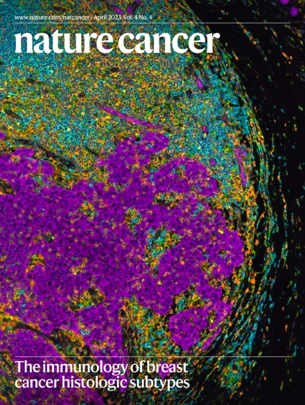
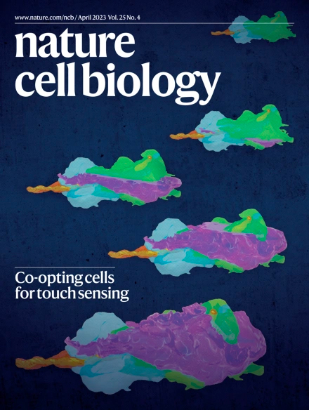
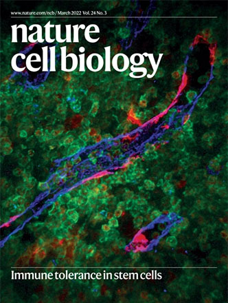

Featured Publications

Nature Cancer (2023)
A sense-antisense RNA interaction promotes breast cancer metastasis via regulation of NQO1 expression.

Nature Cell Bio (2023)
An mRNA processing pathway suppresses metastasis by governing translational control from the nucleus.

Nature Cell Bio (2022) 24:307
Leucyl-tRNA synthetase is a tumour suppressor in breast cancer and regulates codon-dependent translation dynamics.

Cancer Discovery (2020) 10:1410
RBMS1 Suppresses Colon Cancer Metastasis through Targeted Stabilization of Its mRNA Regulon.